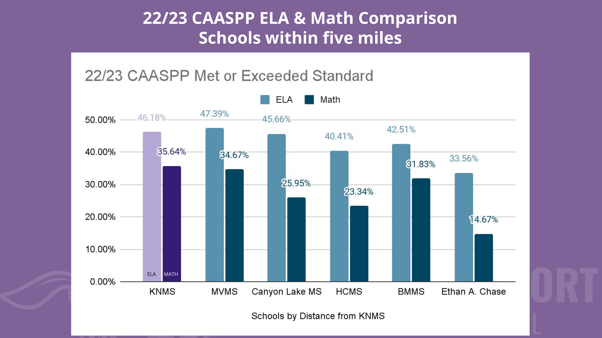
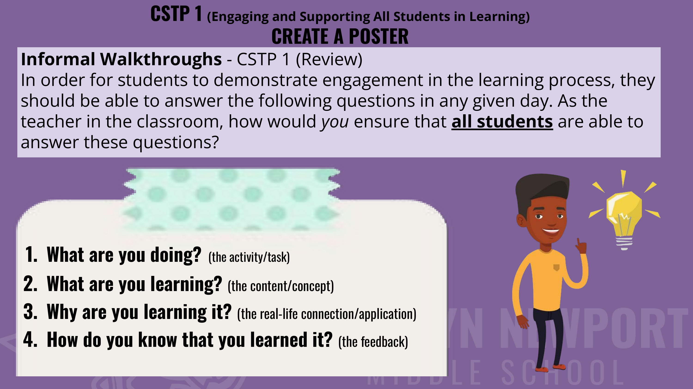

Title I, [charter] and private. Classroom, coaching, cross-curricular development, founding-team admin.
The work below is what produced the structural conviction behind the Independent Portfolio — and demonstrates the ability to deliver measurable outcomes inside complex systems.
Schoolwide Performance Turnaround
Inaugural Assistant Principal · Title I Middle School (~1,000 students)
- Built a data-driven PLC operating system with planning + review cycles.
- Implemented PDSA cycles across grade-level and content teams.
- Delivered PD on MTSS, UDL, and instructional clarity.
- Established schoolwide instructional expectations + monitoring infrastructure.
- 10–15% gain in performance outcomes in one year.
- 65%+ of students improved ELA and Math.
- +6.6 point gain on California Science Test (CAST).
- Direct contribution to CA Distinguished School recognition.
Teacher Clarity Walkthrough Implementation
Admin-team monitoring system · Fisher & Frey clarity framework · Hattie ES 0.75
An admin-team walkthrough protocol that drove dramatic year-over-year academic growth, increased teacher capacity, and built continuous quality assurance into the system.
- Operated as an admin team — every classroom got structured observation.
- Anchored to Fisher & Frey clarity framework (Hattie ES 0.75).
- Randomized student selection + structured response capture.
- Weekly feedback loops integrated into PLC + PD rhythms.
- ELA +5.2% · Math +11% · Science +15% (schoolwide).
- Math 8th grade nearly doubled (18% → 36%).
- Increased teacher capacity through credible peer language.
- System-level quality assurance, sustained.
Schoolwide CAASPP & CAST growth across the two-year admin-team window:
| Cohort | Year 1 (23/24) | Year 2 (24/25) | Delta |
|---|---|---|---|
| ELA · 6th grade | 45% | 48% | +3% |
| ELA · 7th grade | 45% | 49% | +4% |
| ELA · 8th grade | 43% | 50% | +7% |
| Math · 6th grade | 36% | 36% | +/− 0 |
| Math · 7th grade | 28% | 39% | +11% |
| Math · 8th grade | 18% | 36% | +18% |
| Science (schoolwide) | 27% | 42% | +15% |
Instructional Coaching & Workforce Development
1:1 coaching · group training · Walkthrough-driven data cycles
- 1:1 performance coaching + whole-team training cycles.
- Coaching anchored to Walkthrough data (see Case 02) — observed practice, not impression.
- Modeled high-impact strategies; coached staff through application.
- Led admin-team PD on framework adoption + curriculum tools.
- Designed reusable curriculum scaffolds teams could adopt and adapt.
- Improved instructional consistency across teams.
- Strengthened internal capability; reduced external support reliance.
- Adoption of framework-aligned curriculum tools across grade levels.
- Direct contribution to gains in Cases 01 and 02.

Professional Learning sample · comparative performance data analysis (Jan 2024)

Professional Learning sample · CSTP-aligned instructional reflection protocol
A 25-slide administrator-facing presentation I built to align district leadership around the NGSS framework, the instructional shifts it requires, and the action steps for supporting them — with equity threaded throughout.
A reusable scaffolding instrument that maps NGSS-aligned units across the year — designed for teams to adopt, adapt, and align across grade levels without re-inventing the structure each year.
DISCOVER Academy Launch & Cross-Curricular Design
Inaugural staff · Sequoia MS, Newbury Park, CA · 2011 · CSUCI partnership
- Inaugural staff at DISCOVER Academy at Sequoia MS, Newbury Park (Jan 2011).
- Collaborated with CSU Channel Islands (CSUCI) to design cross-curricular units connected by a unifying theme at each grade level.
- Built integrated learning that wove science, humanities, and math through shared inquiry — not as siloed subjects.
- Designed the academy's hands-on, inquiry-based instructional model end-to-end.
- Successful inaugural launch with cross-stakeholder consensus.
- Operational CSUCI partnership producing authentic university-connected learning.
- Theme-based curriculum model that survived the founding year and scaled forward.

Data & Systems Leadership
Site-wide performance analysis · Board-level communication
- Analyzed + synthesized site-wide data into executive summaries.
- Communicated insights directly to leadership and board.
- Connected data trends to strategy and resource allocation.
- Improved alignment between operations and stated goals.
- Increased clarity in leadership decision-making.
- Supported measurable site-wide growth initiatives.
Tech Trek STEM Camp · Director
AAUW-sponsored residential Math + Science camp · Whittier College · 3 years
Took over an established AAUW Tech Trek camp and redesigned the curriculum, schedule, and program arc end-to-end — adding a culminating research-and-presentation arc, college-level lab experiences, and structured daily themes. Doubled enrollment over the directorship tenure.
- Directed the program 3 consecutive years.
- Redesigned schedule, curriculum, and culminating arc (see comparison below).
- Led a staff of 20 across 1 week residential at Whittier dorms.
- Stakeholder management: AAUW, university, families, staff.
- Doubled enrollment across the directorship.
- Higher camper engagement; sustained 3-year tenure.
- Operational integration with Whittier campus partners.
- Advanced AAUW's national STEM-for-girls mission at scale.
- 7-day program with abrupt Sunday registration
- One 4-hour core class block (8am–12pm)
- Generic evening "dorm meeting + thank-you letters"
- No culminating camper presentation
- Single field trip; limited campus building use
- Workshops: Optics, Math Games, Reader's Theatre
- No pre-program measurement instrument
- 8-day program with dedicated orientation day
- Modular core class with structured breaks for Dorm Moms
- Themed daily curriculum: 21st-Century Women in STEM research arc
- Culminating Final Presentation — campers research + present
- Bolsa Chica Wetlands + CA Science Center field trips
- College-level workshops: Cadaver Lab, Chemistry of Makeup, Roller Coasters, multi-day Rube Goldberg build
- Pre-survey instrument for impact measurement
- Multi-building campus use (Villalobos · Hoover · Stauffer)